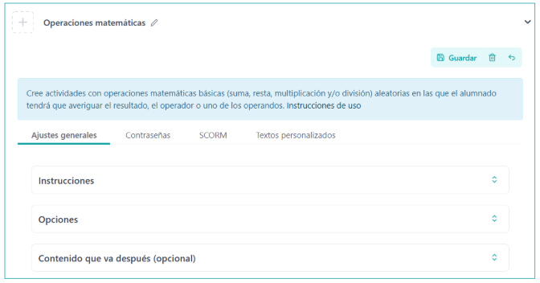
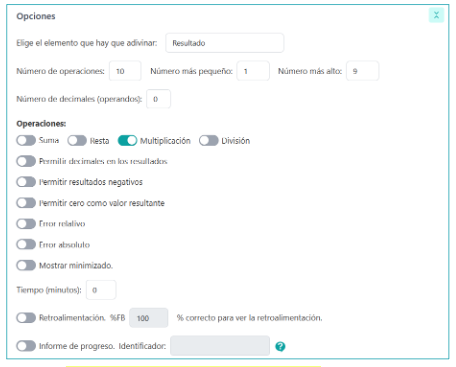

What is it?
We will use this device for Create activities with basic mathematical operations (suma, rest, multiplication and/or division) random in which the student will have to find out the result, the operator or one of the operators.
Given the flexibility of this iDevice, we will be able to define:
- If we want the student to guess the result, the operator, the first or second operating or any of the previous ones.
- The highest and lowest number, the number of operations and the decimal
- The errors (relative and/or absolute)
Examples of use
He performs the following mathematical operations.
Realiza las siguientes operaciones matemáticas.
","showMinimize":false,"type":"result","number":"15","operations":"1111","min":"10","max":"50","decimalsInOperands":2,"decimalsInResults":true,"negative":false,"zero":false,"itinerary":{"showClue":false,"clueGame":"","percentageClue":40,"showCodeAccess":false,"codeAccess":"","messageCodeAccess":""},"isScorm":0,"textButtonScorm":"Guardar la puntuación","repeatActivity":true,"weighted":100,"textFeedBack":"","textAfter":"","feedBack":false,"percentajeFB":100,"time":2,"errorAbsolute":0,"errorRelative":0.05,"errorType":1,"mode":0,"negativeFractions":false,"solution":true,"evaluation":false,"evaluationID":"","id":"20251021091936FRZCRS","msgs":{"msgHappen":"Pasar","msgReply":"Responder","msgSubmit":"Enviar","msgEnterCode":"Introduzca el código de acceso","msgErrorCode":"El código de acceso no es correcto","msgGameOver":"¡Fin de la partida!","msgClue":"¡Genial! La pista es:","msgYouHas":"Tiene %1 aciertos y %2 fallos","msgCodeAccess":"Código de acceso","msgPlayAgain":"Jugar otra vez","msgRequiredAccessKey":"Es necesario el código de acceso","msgInformationLooking":"¡Genial! La información que estaba buscando","msgPlayStart":"Pulse aquí para jugar","msgErrors":"Errores","msgHits":"Aciertos","msgScore":"Puntuación","msgWeight":"Peso","msgMinimize":"Minimizar","msgMaximize":"Maximizar","msgTime":"Límite de tiempo (mm:ss)","msgLive":"Vida","msgFullScreen":"Pantalla Completa","msgExitFullScreen":"Salir del modo pantalla completa","msgNumQuestions":"Número de preguntas","mgsAllQuestions":"¡Completadas las preguntas!","msgSuccesses":"¡Correcto! | ¡Excelente! | ¡Genial! | ¡Muy bien! | ¡Perfecto!","msgFailures":"¡No era eso! | ¡Incorrecto! | ¡No es correcto! | ¡Lo sentimos! | ¡Error!","msgTryAgain":"Necesitas al menos %s% de respuestas correctas para obtener la información. Inténtalo de nuevo.","msgEndGameScore":"Antes de guardar la puntuación comience la partida.","msgScoreScorm":"La puntuación no se puede guardar porque esta página no forma parte de un paquete SCORM.","msgAnswer":"Responder","msgOnlySaveScore":"¡Sólo puede guardar la puntuación una vez!","msgOnlySave":"Sólo puede guardar una vez","msgInformation":"Información","msgYouScore":"Su puntuación","msgOnlySaveAuto":"Su puntuación se guardará después de cada pregunta. Sólo puede jugar una vez.","msgSaveAuto":"Su puntuación se guardará automáticamente después de cada pregunta.","msgSeveralScore":"Puede guardar la puntuación tantas veces como quiera","msgYouLastScore":"La última puntuación guardada es","msgActityComply":"Ya ha realizado esta actividad.","msgPlaySeveralTimes":"Puede realizar esta actividad cuantas veces quiera","msgPrevious":"Anterior","msgNext":"Siguiente","msgQuestion":"Pregunta","msgCorrect":"Correcto","msgClose":"Cerrar","msgSolution":"Solución","msgCheck":"Comprobar","msgWithoutAnswer":"Sin contestar","msgReplied":"Contestadas","msgCorrects":"Derecha","msgIncorrects":"Incorrecto","msgIncomplete":"Sin completar","msgEndTime":"El tiempo ha finalizado.","msgAllOperations":"Has realizado todas las operaciones.","msgFracctionNoValid":"Escribe una fracción valida.","msgOperatNotValid":"Escribe un operador válido: +-x*/:","msgNewGame":"Pulse aquí para jugar","msgUncompletedActivity":"Actividad no completada","msgSuccessfulActivity":"Actividad superada. Puntuación: %s","msgUnsuccessfulActivity":"Actividad no superada. Puntuación: %s","msgTypeGame":"Operaciones matemáticas"}}How is it done?
When selecting the iDevice "Mathematical Operations" from the list of iDivices, the following will be shown in our eXeLearning:

In the top, we will have the possibility to modify the title and assign an icon, once the iDevice is saved. Last, we’ll have the option to include a subsequent content. We see that there are a number of options and tabs, each with a different functionality that will allow us to configure our game in a very flexible way
General Adjustments
The tab "General Adjustments" is the one that is displayed by default when creating the iDevice Mathematical Operations.
In this tab we will define the instructions to perform the game, the different options and settings available and the questions with the clues we determine.
- By clicking on the "Instruktions" section, a text box will be opened where we will be able to specify the instructions to follow.
- By clicking on the "Options" section we will be able to decide:

- Do not activate the "Fractions" box (Elemental Operations)
-
The element to guess: result, operator, operators and random, the number of operations to perform and interval of numbers, the numbers of decimal in operators, the type of operation (sumes, remains, multiplications, divisions), and various options as to allow decimal results, negative, zero, errors... Likewise, we can limit the time for the performance of the activity.
It is also possible to mark the Progress Report with its corresponding identifier.
- Activating the “Fractions” box (Fractional operations)
-
The element to guess: result, operator, operators and random, the number of operations to perform and interval of numbers, the numbers of decimal in the operators, the type of operation (sumes, remains, multiplications, divisions), and options as to allow negative or the irreductable fraction. We will be able to limit the time for the performance of the activity and the option is to mark the Progress Report with its corresponding identifier.
Contrasigns
In the "Contrasigns" tab, we will be able to create a challenge itinerary in which players will not be allowed to access a new game until they get a key in a previous activity. For this, we can set up an access code as well as a message that will be shown to players when they reach a fixed percentage of accidents, and that they will be allowed for use as a password for a new challenge or a subsequent activity.

Both are optional, and your configuration will only appear if we mark them, as in the image.
Scorry
In the "SCORM" tab we will be able to determine if we want to save the results obtained by our students and in what conditions we want it to do when we export our contents.
It should be noted that this option of storage It will only be available for SCORM exports and when we publish our content on platforms such as: by Moodle or other LMS platforms compatible with SCORM.
personalized texts
Table where we will be able to customize the automatic texts and messages that the iDevice generates.